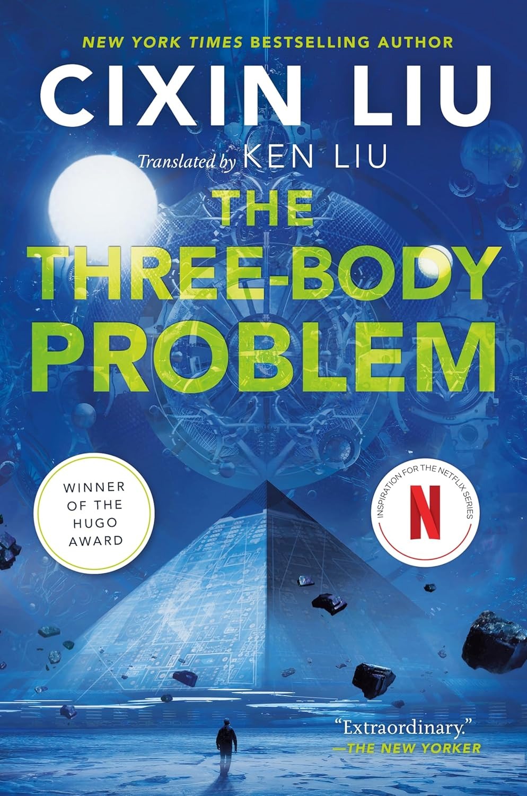
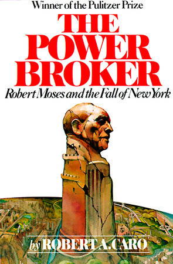
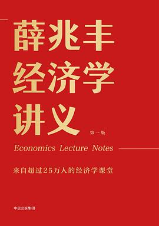
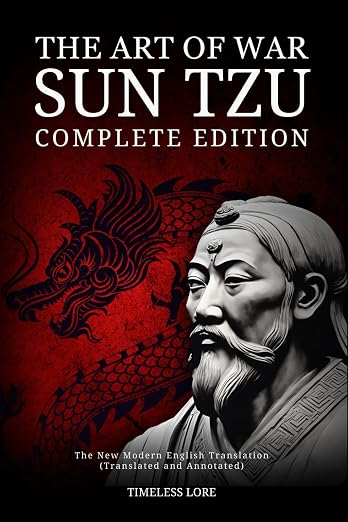
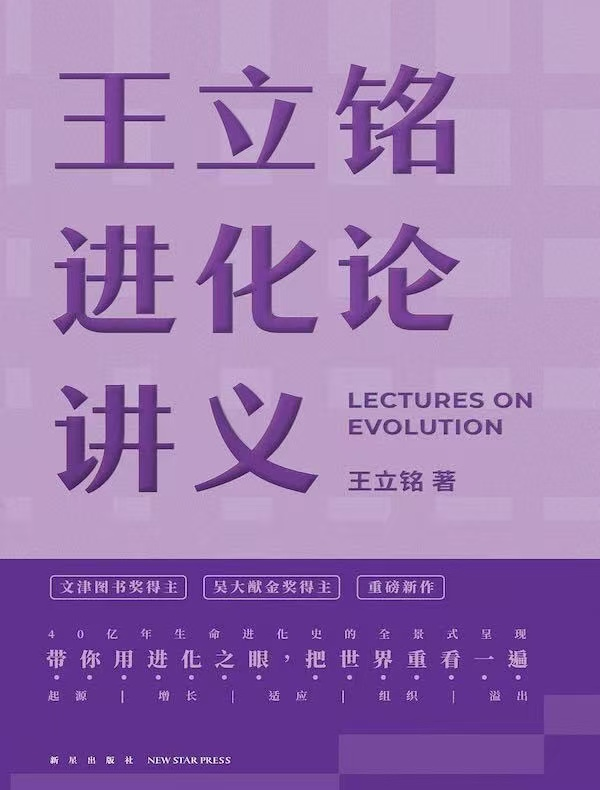
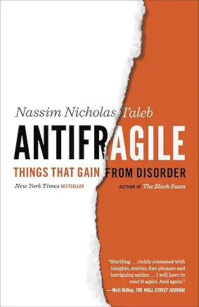

Andrew Huiqing Ji / Books That Shaped Me
Readings
A record of books that have changed how I see the world—and my place within it.
Reading 01
Tractatus Logico-Philosophicus
逻辑哲学论
My favorite book of philosophy: a difficult journey through facts, language, the world, and the limits of what can be said.
Read my note →
Reading 02
The Three-Body Problem
Remembrance of Earth’s Past Trilogy · 三体三部曲
A trilogy that captured my imagination—and one I have recommended to my children.
Read my note →
Reading 03
The Power Broker
Robert Moses and the Fall of New York
A book I believe every new immigrant to New York should read.
Read my note →Reading 04
The Davis Dynasty
Fifty Years of Successful Investing on Wall Street
The book that taught me why wealth can only be built slowly.
Read my note →
Reading 05
薛兆丰经济学讲义
Economics Lecture Notes
Economics taught me to believe that there is always a better solution.
Read my note →
Reading 06
The Art of War
孙子兵法
First secure yourself against defeat; then seek victory.
Read my note →
Reading 07
王立铭进化论讲义
Lectures on Evolution
A slight advantage, compounded over time, can decide who survives.
Read my note →
Reading 08
Antifragile
Things That Gain from Disorder · 反脆弱：从不确定性中获益
The opposite of fragile is not merely strong. It is antifragile.
Read my note →